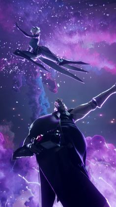
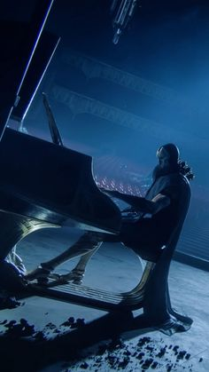

Jhin
O virtuosoJhin é um psicopata criminoso meticuloso que acredita que assassinato é arte. Uma vez prisioneiro ioniano, mas libertado por elementos sombrios dentro do conselho de Ionia, o serial killer agora trabalha como assassino de sua cabala. Usando sua arma como seu pincel, Jhin cria obras de brutalidade artística, vítimas horripilantes e espectadores. Ele ganha um prazer cruel de colocar em seu teatro horrível, tornando-o a escolha ideal para enviar as mensagens mais poderosas: terror.
 Durante anos, as montanhas do sul de Ionia foram atormentadas pelo infame "Demônio dourado". Por toda a província de Zhyun, um monstro massacrou dezenas de viajantes e às vezes fazendas inteiras, deixando para trás exibições torcidas de cadáveres. Milícias armadas revistaram as florestas, cidades contrataram caçadores de demônios, mestres de Wuju patrulhavam as estradas - mas nada atrasou o trabalho horrível da besta.
Em desespero, o Concílio de Zhyun enviou um enviado para implorar ao Grande Mestre Kusho por ajuda. Ao saber da situação da região, Kusho fingiu uma desculpa para não poder ajudar. Mas uma semana depois, o mestre, seu filho Shen, e o aprendiz estelar Zed, disfarçaram-se comerciantes e se mudaram para a província. Em segredo, eles visitaram as incontáveis famílias emocionalmente despedaçadas pelos assassinatos, dissecaram as terríveis cenas de crime, e procuraram possíveis conexões ou padrões com os assassinatos.
"No massacre floreço, como uma flor no amanhecer" - Jhin
- Região: Ionia
- Função: Atirador
- Idade: ??
- Preço: 6300EA / 975RP
- Sexo: Masculino
- lançamento no Início de 2016
Em Tuula, Jhin mantivera seus segredos aprisionados consigo, revelando muito pouco de si durante os anos que passou ali. Os monges que o vigiavam perceberam que ele era um aluno exemplar e muito habilidoso em diversas áreas, como forja, poesia e dança. Entretanto, não encontraram nada que pudesse curá-lo de suas fascinações mórbidas.
Independentemente de quem eram seus patronos ocultos, o fato é que deram a Jhin fundos quase ilimitados, e pareciam ansiosos para assistir às suas "performances" cada vez mais populosas. Toda Runeterra parece ser uma tela para a devastadora arte de Khada Jhin, e somente ele sabe para onde a próxima pincelada levará o derramamento de sangue.
Todas as imagens acima do personagem Jhin, foram retiradas da cinematic Waken postada no youtube pelo canal League of Legends, todos os creditos a este canal e a empresa Riot Games.